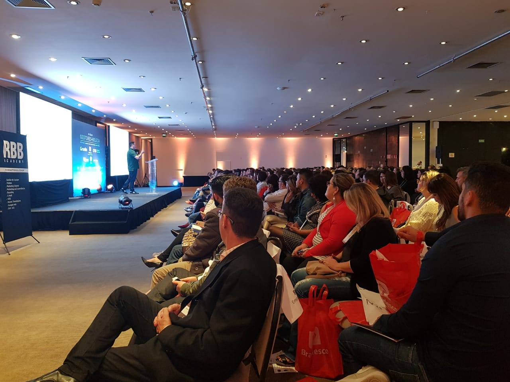
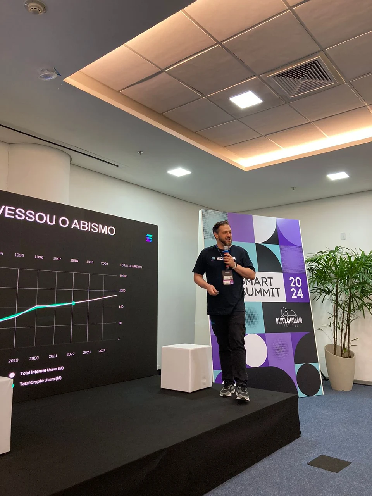
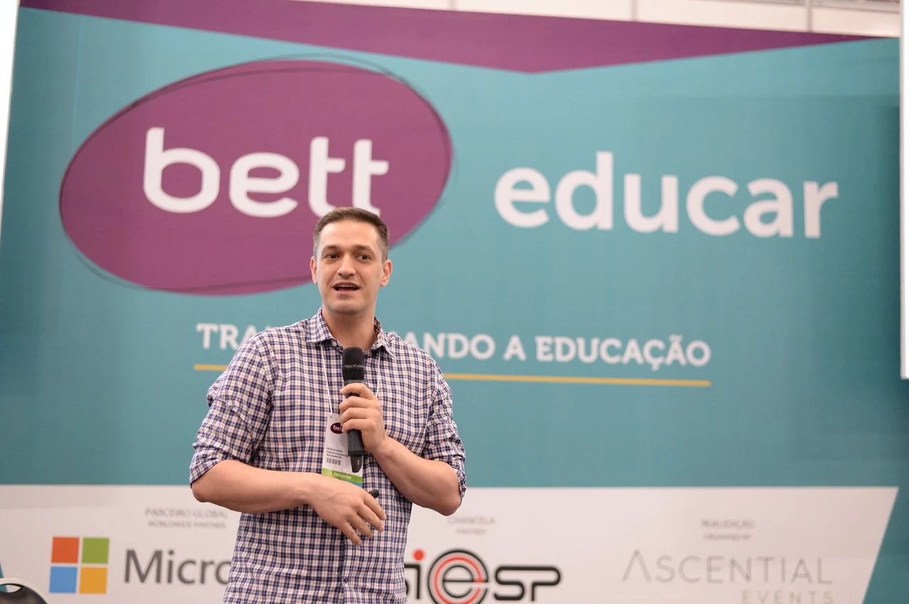
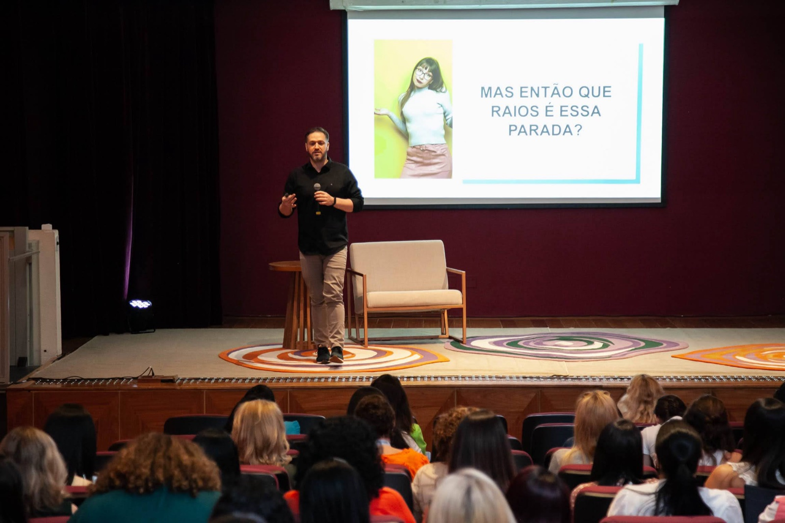
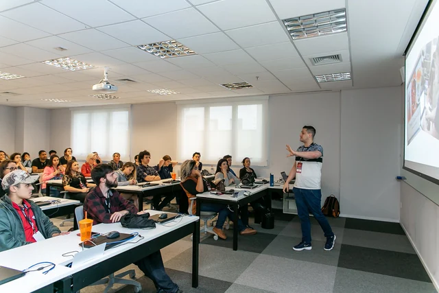
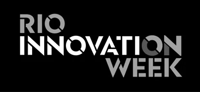
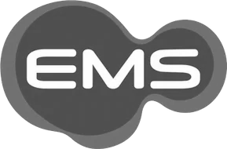
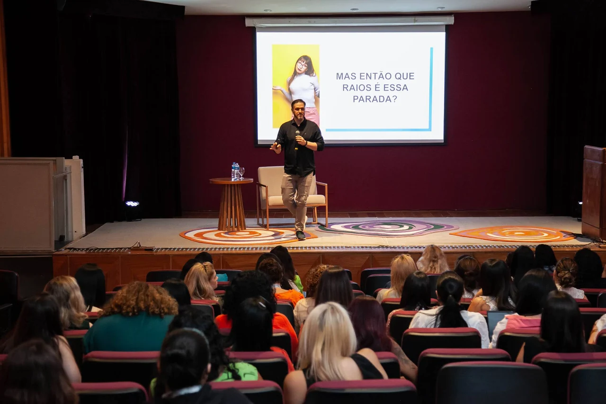
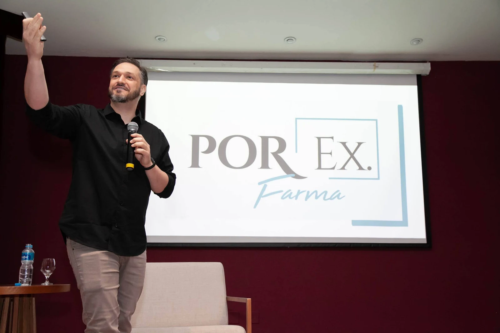

Apresente suas ideias com segurança e presença.
Do Zero ao Palco
em 6 encontros
Mentoria individual de apresentação e storytelling para executivos, com Estevão Rizzo.
Vamos trabalhar na sua própria apresentação, da organização do conteúdo ao ensaio final.
Converse comigo pelo WhatsApp
Você recebeu um convite para falar em público e está sentindo insegurança e frio na barriga?!
A boa notícia é que falar em público não é uma questão de dom, mas uma técnica que pode ser aprendida, praticada e aperfeiçoada.
Com este programa, garanto que levo você do zero ao palco em apenas 6 encontros.
Como funciona
Mentoria individual.
- 6 encontros individuais e práticos, de até 1h30 cada.
- Suporte pelo WhatsApp até o final do processo.

Para quem é essa mentoria?
- Faz apresentações corporativas e quer estruturar melhor a narrativa e manter a atenção do público.
- Já fala em público e quer aperfeiçoar a técnica e a presença de palco.
- Vai dar uma palestra em um evento e precisa organizar o conteúdo e ensaiar.
- Vai subir ao palco pela primeira vez e quer se preparar.
- Quer desenvolver confiança e naturalidade ao falar em público, com técnica e prática.
- Prefere aprender fazendo, trabalhando na própria apresentação ao longo dos 6 encontros.
Seu mentor
Estevão Rizzo
Professor na FGV e na FAAP · Palestrante profissional · Treinador corporativo · Mentor executivo
Falo em público há mais de 20 anos. Dar aulas e palestras é o meu chamado e a minha maior paixão.
Também sou sócio e fundador da Por Exemplo e da Por Exemplo Farma, empresas de palestras e treinamentos corporativos.
Já palestrei em diversos eventos e treinei times de dezenas de empresas. Veja alguns exemplos:





O que vamos trabalhar em cada encontro
Do conteúdo à apresentação.

1º encontro
Definir o caminho da sua apresentação
Vamos entender de que evento você vai participar e qual apresentação precisa fazer. A partir daí, vamos organizar a lógica do conteúdo e estruturar a narrativa.
2º encontro
Revisar o conteúdo e ajustar o tempo
Vamos revisar o conteúdo que você preparou, identificar melhorias, ajustar a apresentação ao tempo disponível e conferir se a narrativa funciona.
3º encontro
Primeiro ensaio: reconhecer o seu jeito de apresentar
Você vai apresentar o conteúdo sem tentar acertar todos os detalhes de uma vez. A partir desse ensaio, vamos identificar o seu estilo e definir juntos os pontos a melhorar.
4º encontro
Segundo ensaio: trabalhar a forma de apresentar
Você vai apresentar sem interrupções, com atenção ao formato, à expressão corporal e à entonação. O foco é ganhar confiança no conteúdo e no seu jeito de apresentar. Ao final, vamos conversar sobre os ajustes para o próximo ensaio.
5º encontro
Terceiro ensaio: lidar com imprevistos
Vamos simular situações que podem acontecer durante uma apresentação: interrupções, perguntas que tiram o foco e falhas técnicas. O objetivo é praticar como retomar a apresentação e lidar com esses imprevistos com mais tranquilidade e naturalidade.
6º encontro
Ensaio final: reunir os ajustes
No último ensaio, vamos trabalhar o domínio do conteúdo, a entonação e a naturalidade da apresentação, reunindo os ajustes feitos ao longo dos encontros.

Agora você está pronto para o palco.
Ao final dos 6 encontros, você estará pronto para fazer a sua apresentação em nível profissional, com segurança, naturalidade e o seu próprio estilo.
Agendar avaliação sem custoMentoria de Apresentação e Storytelling
Transforme o frio na barriga em presença de palco.
Em 6 encontros individuais, vou preparar você para apresentar com segurança, técnica e naturalidade. Agende sua avaliação sem custo e dê o primeiro passo do zero ao palco.
Quero minha avaliação sem custoFale comigo pelo WhatsApp.
Perguntas frequentes
Da primeira palestra à apresentação para a diretoria, tire suas dúvidas sobre a mentoria.
Como funciona a mentoria individual de oratória e apresentação?
No Do Zero ao Palco, você trabalha comigo na apresentação que precisa fazer. São seis encontros individuais de até 1h30: começamos pela estrutura do conteúdo, ajustamos a narrativa ao tempo disponível e ensaiamos até a versão final. Você também tem meu suporte pelo WhatsApp até o fim do processo.
A mentoria é online ou presencial?
Atendo online em todo o Brasil e presencialmente em São Paulo. Nos dois formatos, os encontros são individuais e o trabalho é em cima da sua apresentação.
Posso preparar uma apresentação para a diretoria, em vez de uma palestra?
Sim. Podemos trabalhar, por exemplo, na apresentação de um projeto ou de resultados. Se você precisa que a diretoria tome uma decisão, começamos definindo qual é essa decisão. Isso ajuda a escolher o que precisa entrar na fala e o que pode ficar como material de apoio.
A mentoria serve para quem vai dar a primeira palestra?
Sim. Primeiro, vamos entender o evento, quem vai ouvir você e quanto tempo você terá. Depois, organizamos o que vale contar e ensaiamos em voz alta. Se você já fala em público, usamos os ensaios para aperfeiçoar aspectos da entrega, como ritmo, entonação e presença.
Preciso chegar com a apresentação pronta?
Não. No primeiro encontro, vamos entender o que você precisa apresentar e organizar a lógica do conteúdo. Se você já tem um roteiro ou slides, pode usar esse material como ponto de partida.
Como o storytelling entra numa apresentação de trabalho?
Imagine que você vai apresentar os resultados de um projeto. Em vez de percorrer os números na ordem da planilha, você pode começar pelo que mudou, mostrar os dados que explicam essa mudança e terminar com o próximo passo. Na mentoria, a gente estrutura a narrativa a partir do seu conteúdo e do que o público precisa entender.
O que fazer se eu ficar nervoso ou der branco na hora de apresentar?
Uma forma de se preparar é ensaiar como retomar o fio da apresentação se você se perder, em vez de depender de decorar cada frase. Na mentoria, simulamos perguntas, interrupções e falhas técnicas para praticar como voltar à ideia principal e seguir.
Quanto custa a mentoria Do Zero ao Palco?
O programa completo custa R$ 4.750. O pagamento é dividido em duas partes: 50% após a primeira sessão e 50% após a quarta. A avaliação inicial não tem custo.
Como agendo a avaliação inicial? Ela tem custo?
A avaliação é sem custo. Use o botão de agendamento para falar comigo pelo WhatsApp e me contar qual apresentação você precisa preparar.